RAMemoia
Hack the cameras, outsmart the security bots, escape the mall. I design the levels and environmental puzzles for this third-person stealth game, where every store is a puzzle to solve.
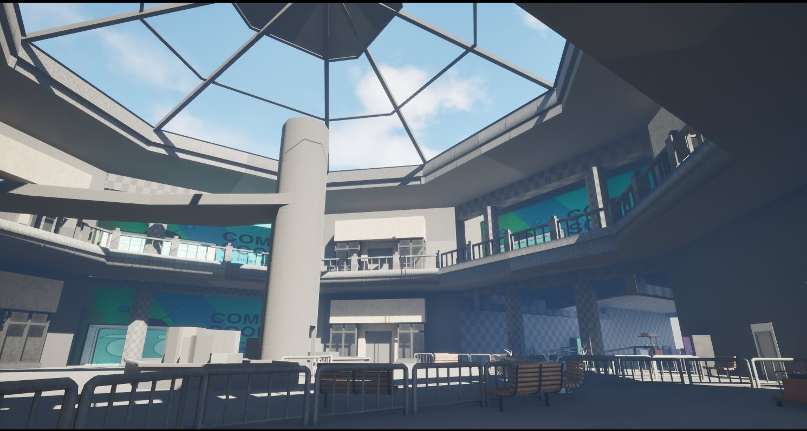
- Role
- Level Designer
- Engine
- Unreal Engine
- Team size
- 9 developers (team “Null”)
- Duration
- Oct 2026 – Spring 2027 (two semesters, in progress)
- My contributions
- Environmental puzzles across the game · level blockouts for layouts and player routes · lighting and post-processing · prop placement to support layout and storytelling
Overview
Players control B-06, a newly built service robot exploring an abandoned mall while avoiding the security bots that still patrol it. With the camera-link mechanic, B-06 can see through security cameras to scout routes, then reach connected terminals to solve puzzles and open new paths.
RAMemoia is my capstone project, running through Spring 2027. The mall is split into themed areas: a central hub, a book store, a tech store, a food court, and a play place. Each area I own goes through the same pipeline: a paper or whiteboard plan, a greybox blockout, a lighting pass, then prop polish.
My main goal is that every room's puzzle can be solved by reading the space itself. Sightlines, lighting color, and prop placement should point toward the solution without UI hints, and give players safe places to watch the security bots' patrols.
Design goals
- Each puzzle's solution can be read from the environment
- Clear player routes in and out of every store
- Lighting color tells players what they can interact with
- Props tell the story of the mall before it was abandoned
The central hub: from greybox to final
I was handed the hub as an empty greybox with no assets. I placed props first to get a sense of the space and its scale, then redesigned it into a two-story atrium with a balcony ring, an octagonal skylight, and a central pillar as a landmark. To meet our deadlines I then cut scope: the final version simplifies the space and moves the hub to night, built around a centerpiece under the starlit skylight.
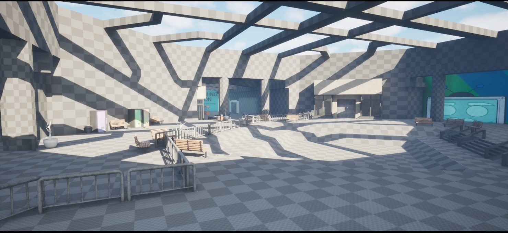
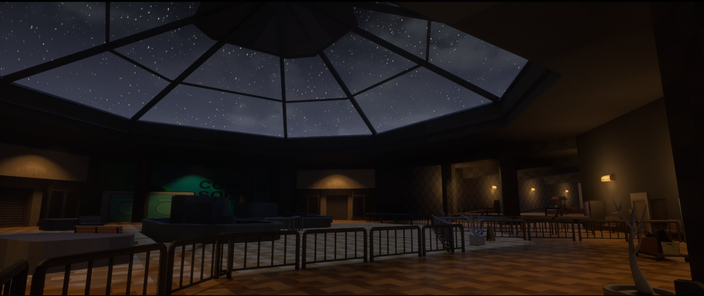
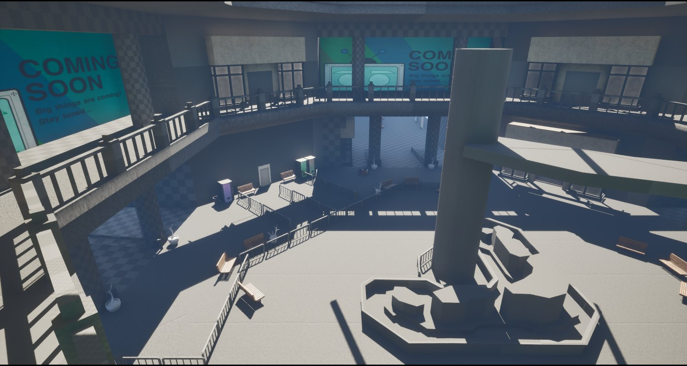
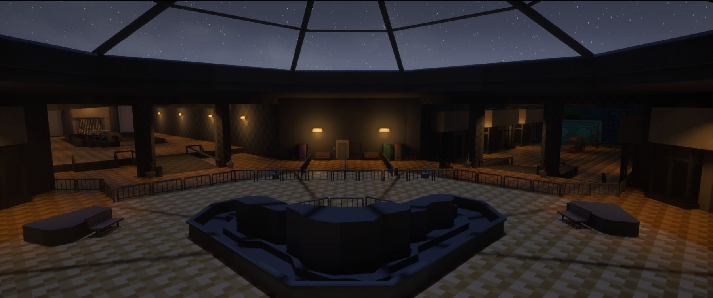
Tech store: from empty shell to finished room
The tech store shows my full process. I started with an empty shell, filled it in to understand the space, planned the puzzle inside that space, then built the puzzle in. From there I added assets until the room felt complete and finished with a detailed lighting pass while polishing prop placement.
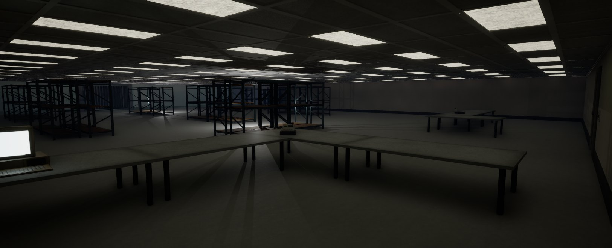
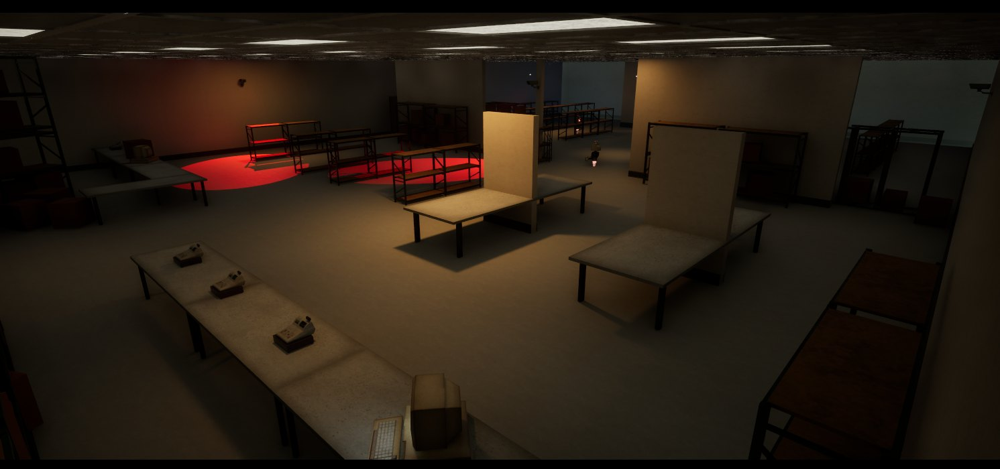
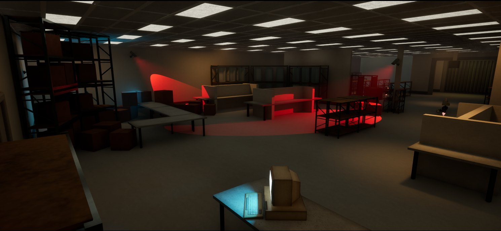
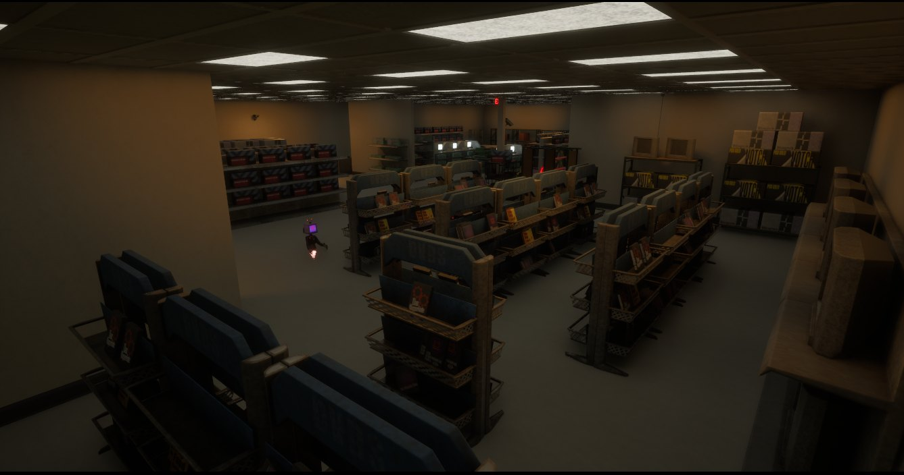
Book store: puzzle layout
The book store is built around a single movable-shelf puzzle. I started with a rough sketch to work out the logic, then turned it into a scaled map on a 200 × 200 Unreal-unit grid so the blockout could match it exactly.
Puzzle logic: a movable shelf has two positions. In position A it blocks the link between two security cameras. Sliding it to position B reveals the link, which lets the player reach the archive terminal and open the archive gate, but the shelf now blocks the doorway. The player has to reset the shelf to position A to get out. Rubble in the mall hallway forces players through the store, so they can't skip the puzzle.

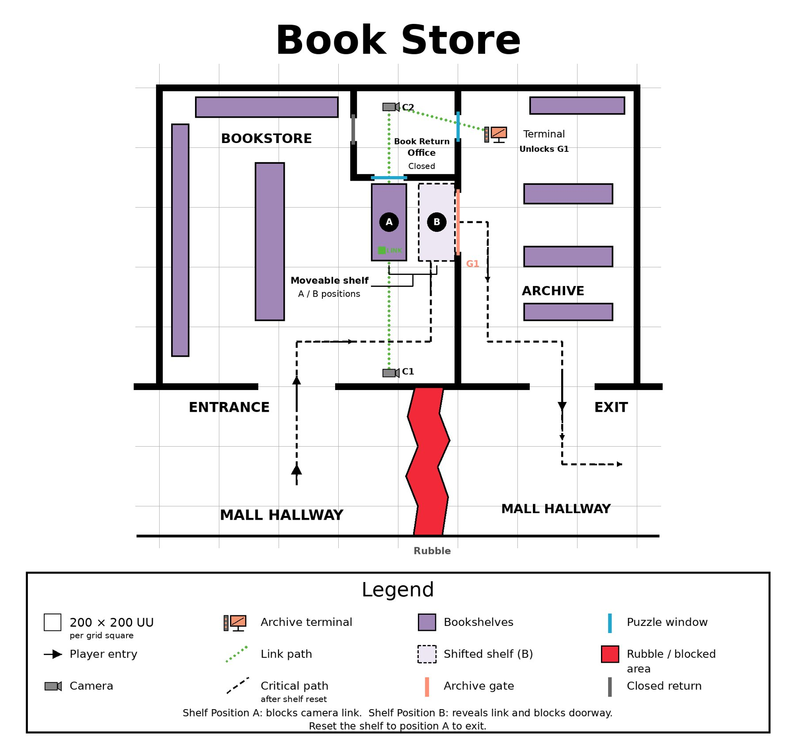
Food court & play place: in progress
These are the newest areas. I planned the play place, which sits just outside the food court in the hub, on the whiteboard. For the food court, I drew security-bot patrol routes over a top-down capture to test where players can slip between them. Both spaces are now built and lit.
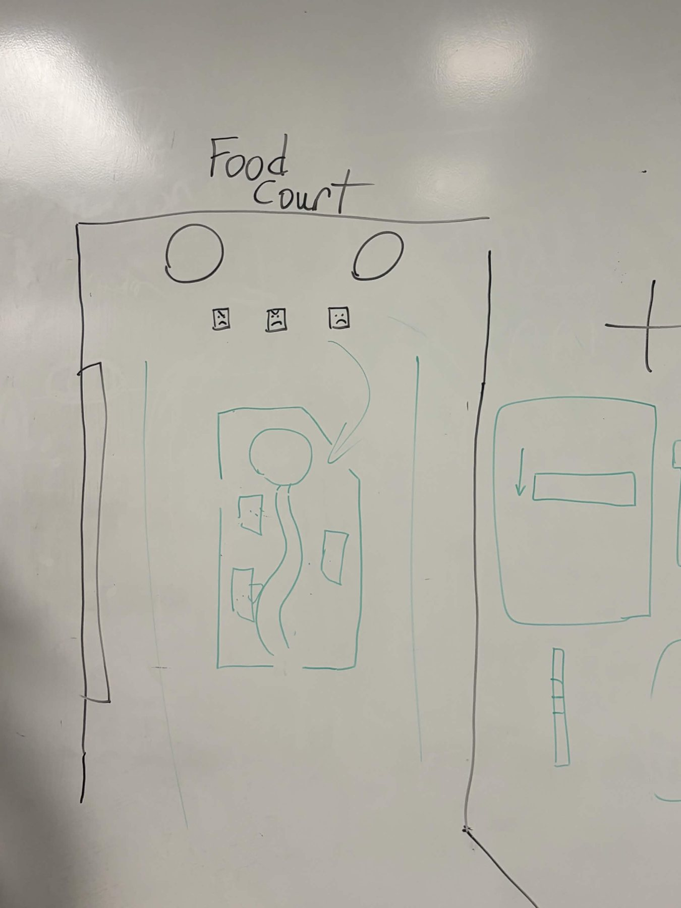

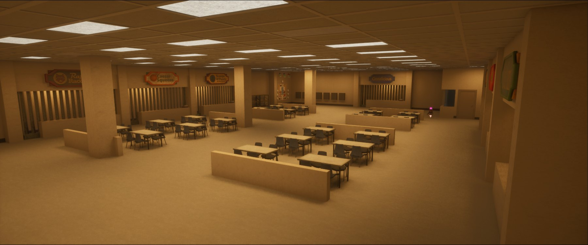
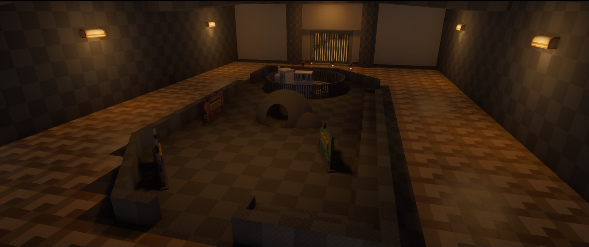
What I'm learning
- Puzzles are built from parts. I design each one by pairing a mechanic with a catch, an assumption the player brings in, and the revelation that breaks it. With that structure in place, I can focus on how a puzzle is presented and how the difficulty curve builds across later puzzles.
- Lighting and sightlines are navigation. In a stealth game they decide where players feel safe, what they notice, and which route they take.
- Playtesting shapes the final design. Adapting layouts to player feedback and technical constraints made every area stronger than its first draft.
Time spent
About 15 hours a week, ongoing since October 2026.